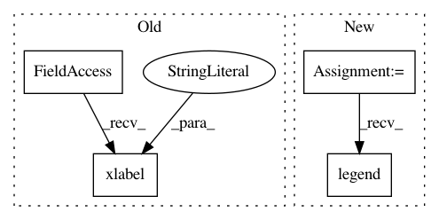

1cc19c989ca609584119a1973845e72598d754d4,test_sweep.py,,,#,24
Before Change
plt.plot(num_points_hack,old_mean-old_std,"r--")
// plt.plot([num_points_hack[0],num_points_hack[-1]],[old_mean[0],old_mean[0]],"r-",label="siggraph17 (auto)")
plt.xlabel("Number of points")
plt.ylabel("PSNR [db]")
plt.legend(loc=0)
plt.xscale("log")
plt.xlim((num_points_hack[0],num_points_hack[-1]))
After Change
plt.xlabel("Number of points")
plt.ylabel("PSNR [db]")
plt.legend(loc=0)
plt.xscale("log")
plt.xlim((num_points_hack[0],num_points_hack[-1]))
plt.savefig("sweep_%s.png"%str_now)
In pattern: SUPERPATTERN
Frequency: 3
Non-data size: 4
Instances
Project Name: richzhang/colorization-pytorch
Commit Name: 1cc19c989ca609584119a1973845e72598d754d4
Time: 2018-09-03
Author: rzhang88@gmail.com
File Name: test_sweep.py
Class Name:
Method Name:
Project Name: uber/ludwig
Commit Name: 8e8a0c8384cce0b7bdb85ae08c85013f9090c5f3
Time: 2019-02-09
Author: piero@uber.com
File Name: ludwig/utils/visualization_utils.py
Class Name:
Method Name: lerning_curves_plot
Project Name: astroML/astroML
Commit Name: 58d21081b729d857884d9c38e6e9122b7b61a27e
Time: 2012-10-21
Author: vanderplas@astro.washington.edu
File Name: examples/datasets/plot_sdss_spectrum.py
Class Name:
Method Name: